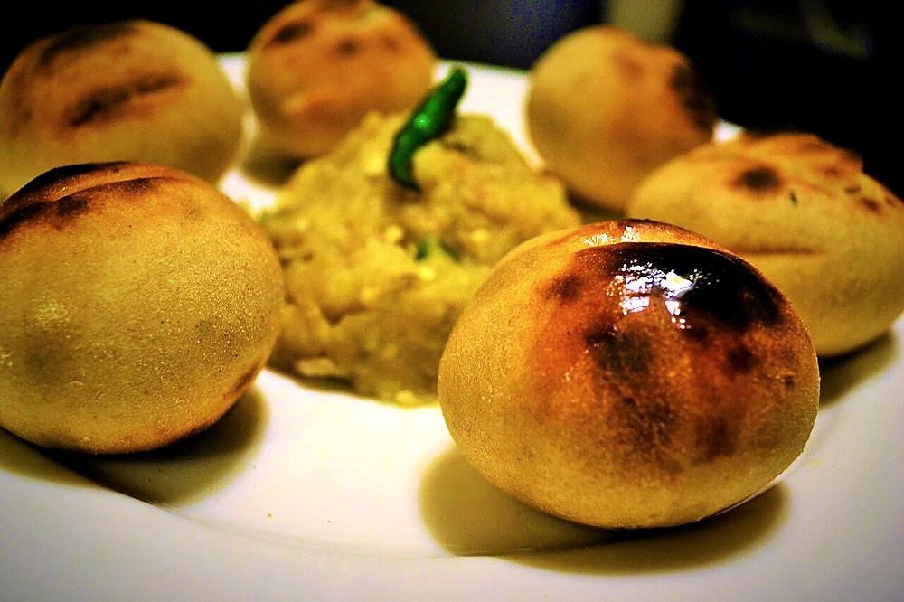

Contains: mustard
Checked against the ingredient list for ten allergens: milk, egg, fish, crustaceans, tree nuts, peanuts, sesame, mustard, soy and gluten. Brands vary, so read the label on anything new to you.
Ingredients
Quantities for 4.
- 2 large, about 800g total Eggplantthe fat purple kind, not the slim ones
- 8 cloves, peeled Garlic4 pushed into the aubergine, 4 crushed raw
- 3, finely chopped Green Chilli
- 1 medium, finely chopped Onion
- 3 tbsp, raw Mustard Oil
- to taste Salt
- 4 tbsp, chopped Coriander Leaves
- half, juiced Lemonoptional
- 1 medium, roasted alongside Tomatoadds sweetness and bodyoptional
Cookware
stovetop
Before you start
- Take the mustard oil out and leave it at room temperature. It goes in raw, so it should not be fridge-cold.
- Cut four deep slits in each aubergine and push a garlic clove into each one before roasting.
- Chop the onion, chilli and coriander while the aubergines roast; the chokha is mashed and eaten within minutes.
Method
- Rub the aubergines with a few drops of oil and set them straight on a medium gas flame.
- Roast 18 to 22 minutes, turning every few minutes, until the skin is blistered black all over and the flesh has collapsed inward.It is ready when the aubergine sags and a skewer meets no resistance at the stem end. Underdone chokha tastes soapy.
- Roast the tomato on the flame alongside for the last 6 minutes until its skin splits and blackens.
- Rest the aubergines 5 minutes, then peel off every scrap of charred skin. Do not rinse them under the tap or you wash the smoke away.Peel with your fingers over a plate, not under running water.
- Mash the flesh coarsely with a fork along with the roasted tomato; leave some texture rather than making a puree.
- Crush the 4 raw garlic cloves to a rough paste with a pinch of salt and stir them through.
- Fold in the onion, green chilli, coriander leaves, salt and the raw mustard oil.Add the mustard oil last and do not heat it. The raw pungency is the whole point of chokha.
- Squeeze over the lemon, taste for salt and serve at room temperature with litti, roti or rice and dal.
Storage
Keeps 2 days refrigerated in a covered box. Bring back to room temperature before serving and refresh with a teaspoon of raw mustard oil; it does not reheat well.
Nutrition Medium estimate
Low protein: 3 g a serving, 8% of the calories
| Per serving294 g | Per 100 g | |
|---|---|---|
| Calories | 173 kcal | 60 kcal |
| Protein | 3.3 g | 1 g |
| Carbohydrate | 18.4 g | 6 g |
| of which sugars | 9.4 g | 3 g |
| Fibre | 7.4 g | 2 g |
| Fat | 11.1 g | 4 g |
| of which saturated | 1.3 g | 0 g |
| of which unsaturated | 8.7 g | 3 g |
Ingredients added to taste rather than by weight are counted as zero, so the true figure is a little higher than shown. Worked out from the listed quantities. Some of the ingredient list is given to taste rather than by weight, so treat these as a guide. Ingredients given to taste rather than by weight are counted as zero, so the real figure is a little higher than this. The + says so. Estimated from raw ingredients using USDA FoodData Central. Cooking changes are not modelled, and added salt is excluded, so sodium is not given.
Written and checked against sources, not cooked in a test kitchen. Times, yields, allergens and nutrition are worked out rather than measured, so use your own judgement on doneness and on storing. More in About.